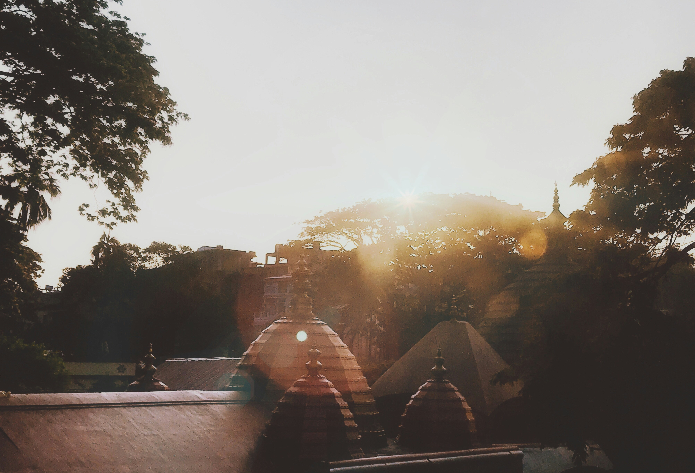

Kamkhya
Ascend the sacred Nilachal Hill in Guwahati to visit the Kamakhya Temple, one of the oldest and most venerated Shakti shrines in India. This ancient center of Tantric practices, rebuilt in 1565 by the Koch dynasty, is a architectural marvel featuring a unique beehive-shaped dome. Unlike traditional temples, it celebrates the divine feminine through the "Ambubachi Mela," a festival honoring the goddess's annual menstruation cycle. Walking through its stone-carved corridors, you feel an overwhelming sense of spiritual energy that has drawn pilgrims and scholars for over a millennium.